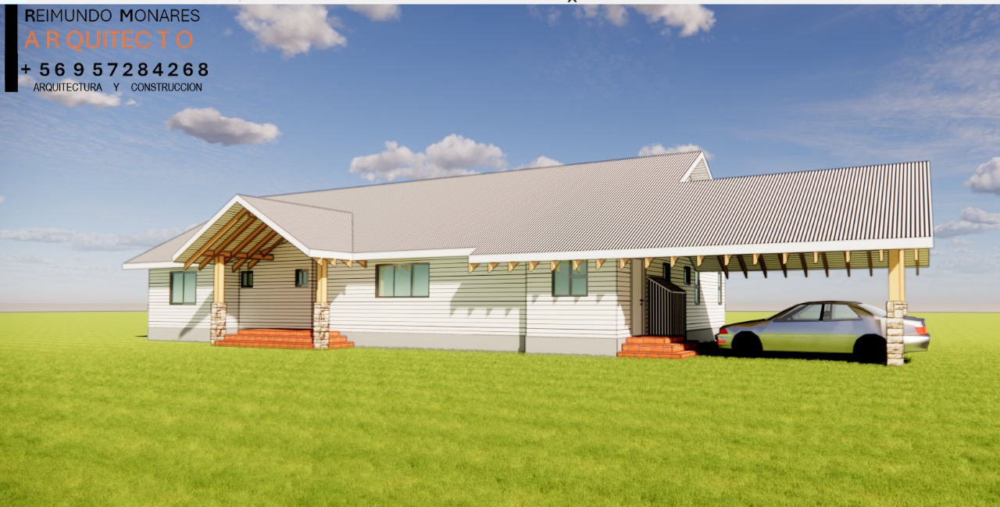

Contratista Arquitecto en dedicacion con el Arte y Función para construir más que edificios, creamos hogar. INSTAGRAM
Business - Negocios - Regulaciones Habitacionales
para contactos Dev Designs Los Angeles Chile.
Intro

"Fe y Arquitectura: Construyendo con Propósito"
Víctor Raimundo Monares Espinoza ha dedicado su vida a construir espacios que no solo sean funcionales, sino también reflejos de los valores que profesa. Como miembro activo de la Iglesia Adventista, su trabajo está marcado por principios de honestidad, dedicación al servicio y una profunda ética cristiana. Estos valores no solo guían su labor profesional, sino que se reflejan en su enfoque hacia cada proyecto, especialmente aquellos destinados a la iglesia y la comunidad.
A lo largo de los años, Víctor ha tenido el privilegio de diseñar y construir diversas iglesias, lugares donde la fe y la arquitectura se encuentran para crear ambientes que inspiren y fortalezcan la conexión espiritual. Su dedicación a crear espacios que respeten y honren las creencias y necesidades de la comunidad es una muestra clara de su compromiso con la fe, demostrando que cada proyecto es mucho más que una edificación; es un lugar de esperanza, crecimiento y unidad.
"Dedicación, experiencia y valores que construyen más que edificios"
La trayectoria profesional de Víctor Raimundo Monares Espinoza es un reflejo de perseverancia, integridad y compromiso. Después de años de esfuerzo y estudio para graduarse como arquitecto, Víctor ha logrado equilibrar su pasión por la arquitectura con su rol como padre de familia, demostrando siempre un enfoque íntegro tanto en lo personal como en lo profesional. Su experiencia es amplia y diversa: trabajó en la Municipalidad de Santa Bárbara, contribuyendo al desarrollo urbano y a la planificación de proyectos comunitarios, y formó parte del Servicio de Los Ángeles, donde aplicó su conocimiento en proyectos de infraestructura y espacios públicos. Actualmente, se desempeña como contratista constructor, liderando proyectos de gran escala en diversas áreas de la construcción, desde diseño estructural hasta ejecución de obras. Su habilidad para conjugar profesionalismo, ética y creatividad ha sido clave en la realización de proyectos que trascienden en funcionalidad y estética, dejando una huella duradera en cada espacio que transforma.
About
"Arquitectura con propósito:
fe, valores y compromiso
Víctor Raimundo Monares Espinoza no solo se define por su experiencia profesional, sino también por los valores que guían cada aspecto de su vida. Como miembro de la Iglesia Adventista, Víctor ha integrado principios de honestidad, humildad y servicio en su práctica arquitectónica y en sus relaciones laborales. Su fe ha sido un pilar fundamental, inspirando un enfoque ético y comprometido en cada proyecto.
A lo largo de su carrera, ha tenido el privilegio de colaborar con diversas iglesias, diseñando y construyendo espacios dedicados a la adoración y el crecimiento espiritual. Estos proyectos no solo reflejan su experiencia técnica, sino también su sensibilidad para crear ambientes que fomenten la conexión espiritual y el sentido de comunidad. Víctor entiende la importancia de cada detalle, desde la funcionalidad hasta la estética, asegurándose de que cada estructura represente los valores de fe y esperanza que forman parte esencial de su vida.
Con esta combinación de fe, familia y pasión por la arquitectura, Víctor ha dejado una huella que trasciende lo material, edificando tanto estructuras como relaciones que fortalecen y transforman a las personas y las comunidades.